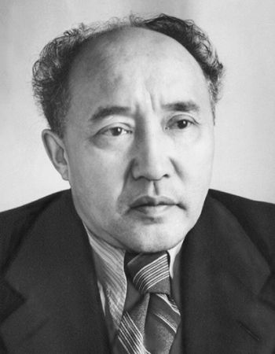

**Mukhtar Omarhanuly Auezov** (1897–1961) was a great Kazakh writer, dramatist, and scholar. He is considered one of the founders of modern Kazakh literature. His fundamental epic novel, **"The Path of Abay"** (also known as *Abay Zholy*), has been translated into many languages and brought him worldwide recognition.
Key Events
- 1897 – Born in the East Kazakhstan Region.
- 1918 – Graduated from the Semipalatinsk Teachers' Seminary.
- 1928 – Graduated from Leningrad State University (Faculty of Philology).
- 1942–1952 – The first two books of the novel "Abay" ("The Path of Abay") were published.
- 1961 – Died in Moscow, buried in Almaty.
Major Contributions
- The epic novel **"The Path of Abay"** (completed in 1956).
- Plays that laid the foundation for Kazakh dramaturgy (e.g., *Enlik-Kebek*).
- Fundamental works on the history of Kazakh literature and folklore.
- Academician of the Academy of Sciences of the Kazakh SSR.
